A Black Box algorithm supposes that natural
number sequence
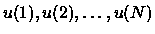
is sorted
in non-descending order, 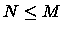
and for each p
(
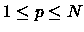)
an inequality
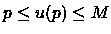
is valid.
Making tests for this algorithm we have met with the following problem.
For setting a random sequence
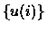
a usual random data generator did not fit. As the sequence
itself had been imposed certain
restrictions, the method of choosing the next random element
(in the interval defined by
restrictions) did not give the random sequence as a whole.
We have come to a conclusion that the problem can be solved in the following
way. If we arrange
all possible sequences in certain order (for example, in lexicographical
order) and assign each
sequence its number, after choice of the random number it is possible to
take the correspondent
sequence for the random one. At the first glance it seems enough to
make up a program generating
all these sequences in such order. Alas! Even having not great values
of M and N it would have
taken any powerful modern computer centuries to enumerate all such
sequences. It turned out it was
possible to avoid generating all sequences if we managed to create
required sequence according to
its number immediately. But even this statement does not cover all.
As the amount of sequences is
quite large, the number can be a long one, composed of hundreds decimal
digits, though our
random data generator could give only normal numbers. We decided to
produce a long random
number from a real random number distributed in [0,1]. Namely, present
the number in binary
notation:
 ,
where all b(i) = 0 or 1. Let us set a
regulation to associate such real number
to an integer from [A,B] segment:
,
where all b(i) = 0 or 1. Let us set a
regulation to associate such real number
to an integer from [A,B] segment:
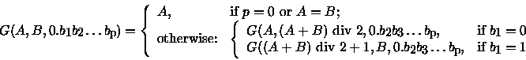
Here we suppose, that  ,
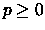,
and ``div 2" is an integer
division by 2.
,
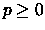,
and ``div 2" is an integer
division by 2.
Let M, N (
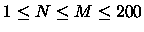)
and a binary real number
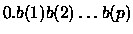
(
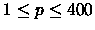)
be given.
Write a program to find out the corresponding
sequence, i.e. to find a sequence
with
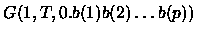
number in lexicographical order of all
possible
for the given
M and N (T is the quantity of such sequences). Numeration begins with 1.
Keep in mind that in
lexicographical order 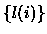
proceeds 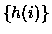
if after omitting equal
beginnings, the first number of
tail is smaller than the first number or
tail.
Following example illustrates the list of all possible
sequences for M = 4 and N = 3 in lexicographical order.
The choice of random binary vector
does not give an
absolute uniform random
data generator if we use the Formula. However, taking into account the
fact that [A,B] interval is big
we shall obtain a distribution applicable in most cases.
1, 2, 3
1, 2, 4
1, 3, 3
1, 3, 4
1, 4, 4
2, 2, 3
2, 2, 4
2, 3, 3
2, 3, 4
2, 4, 4
3, 3, 3
3, 3, 4
3, 4, 4
4, 4, 4
(here T=14)
The first line of the input is an integer K, then a blank line followed by K datasets. There is a blank line between datasets.
The first line of each dataset contains M and N. The second line
contains binary real
number
(without leading, trailing and other spaces).
For each dataset, write into the output data file the corresponding sequence
.
The
sequence numbers should be separated with spaces and end-of-line characters.
There should be up to 20 numbers in each line. If neccesary, the numbers will have leading blanks to occupy 3 characters.
Print a blank line between datasets.
1
4 3
0.01101101011110010001101010001011010
2 2 4